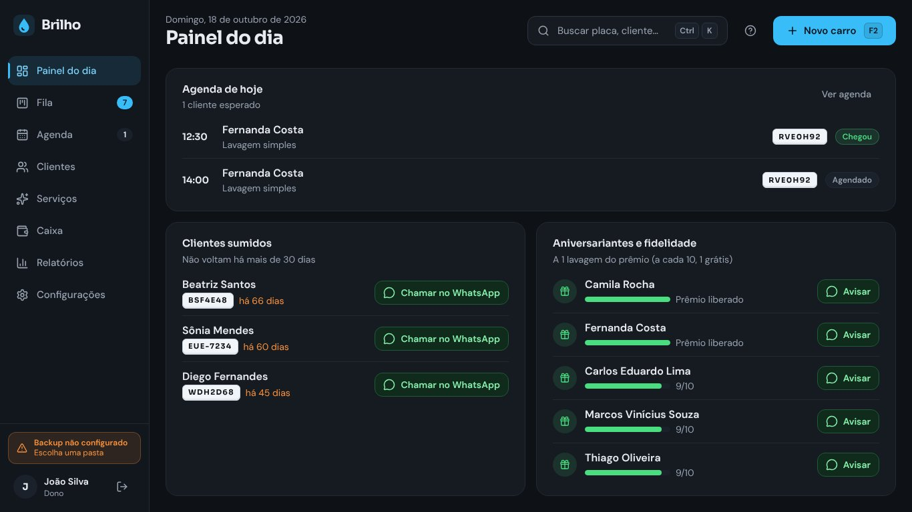

O problemaControlo tudo numa planilha e me perco na fila de carros.

Brilho: sistema para lava-jato
Aplicativo para Windows com fila de carros, agenda de horários, clientes e veículos, programa de fidelidade, caixa, relatórios, comprovante na impressora térmica, mensagens pelo WhatsApp e backup automático. Funciona sem internet.
- React
- TypeScript
- Tauri
- SQLite
- Testes automatizados